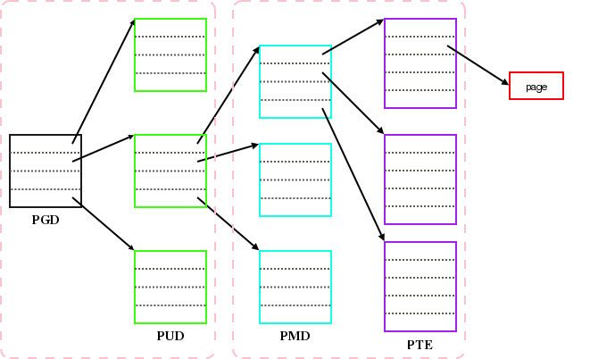

Four-level page tables merged
Thus, in 2.6.11, the page table structure will include a new level, called "PUD," placed immediately below the top-level PGD directory. The new page table structure looks like this:

The PGD remains the top-level directory, accessed via the mm_struct structure associated with each process. The PUD only exists on architectures which are using four-level tables; that is only x86-64, as of this writing, but other 64-bit architectures will probably use the fourth level in the future as well. The PMD and PTE function as they did in previous kernels; the PMD is absent if the architecture only supports two-level tables.
| ||||||||||||||||||||||||
Each level in the page table hierarchy is indexed with a subset of the bits in the virtual address of interest. Those bits are shown in the table to the right (for a few architectures). In the classic i386 architecture, only the PGD and PTE levels are actually used; the combined twenty bits allow up to 1 million pages (4GB) to be addressed. The i386 PAE mode adds the PMD level, but does not increase the virtual address space (it does expand the amount of physical memory which may be addressed, however). On the x86-64 architecture, four levels are used with a total of 35 bits for the page frame number. Before the patch was merged, the x86-64 architecture could not effectively use the fourth level and was limited to a 512GB virtual address space. Now x86-64 users can have a virtual address space covering 128TB of memory, which really should last them for a little while.
Those who are curious about how x86-64 uses its expanded address space may want to take a look at this explanation from Andi Kleen.
The merging of this patch demonstrates a few things about the current
kernel development model. Prior to 2.6, such a fundamental change could
never be applied during a "stable" kernel series; anybody needing the
four-level feature would have had to wait a couple more years for 2.8. The
new way of kernel development, for better or for worse, does bring new
features to users far more quickly than the old method did - and without
the need for distributor backports. This patch is also a clear product of
the peer review process. Andi's initial version worked fine, and could
certainly have been merged into the mainline. The uninvited participation
of another developer, however, helped to rework the patch into a less
intrusive form which brought minimal changes to code outside the VM core.
The end result is an improved kernel which can take full advantage of the
hardware on which it runs.
| Index entries for this article | |
|---|---|
| Kernel | Development model |
| Kernel | Large-memory systems |
| Kernel | Memory management/Four-level page tables |